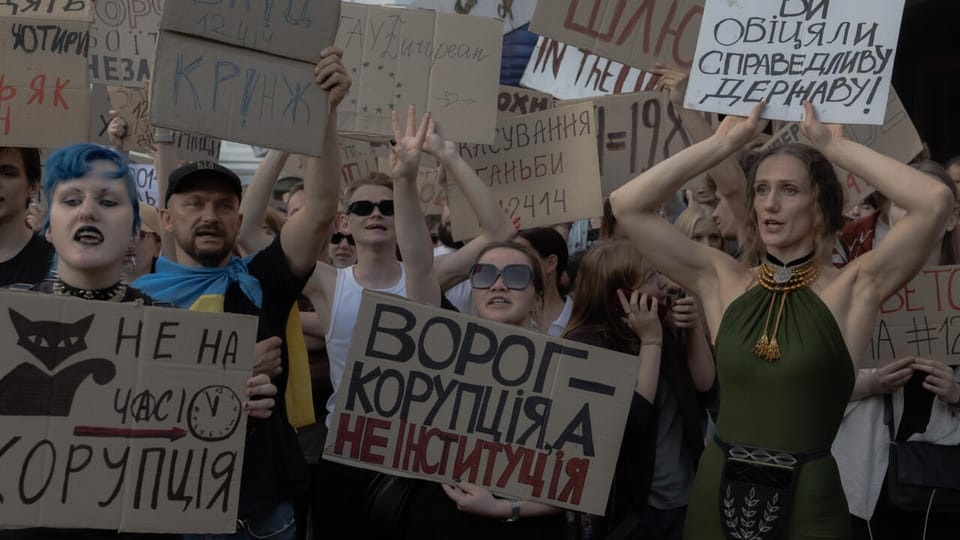

世界苦茶07月24日新闻 | 36条 | 六大学生矿产参观遇难

六大学生矿产参观遇难 | 印度恢复对华旅游签证 | 石破茂否认辞职传言 | 美国印尼达成贸易协议 | 乌克兰削弱反腐机构独立性导致争议
今日三条新闻分析
苦茶数据
美元兑人民币：7.14（昨日7.16，前日7.17）
美元兑日元：146.07（昨日146.78，前日147.75）
上证指数：3598（昨日3608，前日3581）
标普500指数：6358（昨日6309，前日6305）
比特币：119276（昨日118896，前日117302）
布伦特原油：68.80（昨日68.83，前日68.80）
中国新闻
• 六大学生矿场遇难 ：中国985高校东北大学的六名大学生，在央企中国黄金集团旗下的内蒙古矿业有限公司参观时，意外死亡。据中新社报道，记者星期三从内蒙古自治区呼伦贝尔市应急管理局获悉，六名大学生在当地一家企业参观学习中意外坠落溺亡。据了解，当日10时20分许，东北大学六名学生在中国黄金集团内蒙古矿业有限公司乌努格吐山铜钼矿选矿厂参观学习浮选工艺过程中，因格栅板脱落坠入浮选槽。
• 杭州水质异味引风波 ：中国浙江省杭州市余杭区两街道自来水上周出现明显异味，引发居民囤抢矿泉水。杭州官方星期三通报调查情况，指此次供水嗅味异常是气候、环境、水动力条件等多种因素叠加所致，受影响用户7月水费全免。余杭区七名政企领导干部则因履职不力、失职失责被严肃问责。杭州市余杭区仁和街道和良渚街道部分区域的自来水，上个星期三出现明显异味，有居民在社媒平台上反映味道恶臭，且过滤出黄色不明物质。有网民发视频显示，当地居民在超市抢购和囤积矿泉水。余杭区政府上个星期六在官方微信号通报称，仁和水厂星期三8时发现水质嗅味指标异常，采样分析确认后即启动供水突发事件应急预案，切换水源。供水水质得到有效控制，出厂水质安全。
• 中美南海争议交锋 ：中国常驻联合国代表傅聪当地时间星期二在纽约举行的联合国安理会公开辩论会上，批评美国一直罔顾南中国海问题的历史事实，到处搬弄是非、挑拨离间，损害地区国家互信。联合国安理会星期二举行“通过多边主义与和平解决争端促进国际和平安全”高级别公开辩论会。安理会同日一致通过关于加强和平解决争端机制的决议。据美国驻中国大使馆官网发布的讲话实录，美国常驻联合国代理代表谢伊会上，再次敦促中国遵守2016年南中国海仲裁案裁决。
• 中白加强安保合作 ：中国公安部部长王小洪星期二在北京会见白罗斯内务部部长库布拉科夫，呼吁两国强化共建“一带一路”项目安保，为进一步发展中白全天候全面战略伙伴关系贡献更大力量。据新华社报道，王小洪说，中白关系始终保持健康稳定发展，希望双方在维护政治安全、打击跨国有组织犯罪等领域深化执法安全务实合作。新华社引述库布拉科夫表示，愿加强合作，共同维护两国安全。
• 高温来袭电力吃紧 ：中国多地持续出现破纪录高温天气，给全国电力供应带来压力。综合央视网和中国新闻网报道，中国气象局星期三召开新闻发布会。国家气候中心副主任贾小龙在发布会上说，今年入汛以来，全国平均高温日数8.5天，为历史同期最多。陕西等六省区气温达历史同期最高。路透社报道称，中国气象局公共气象服务中心副主任陈辉指出，高温天气将对电力生产与供应带来影响，也可能抑制水电发电能力，并降低光伏发电效率。
• 中方称，雅江工程属主权事务 ：中国外交部称，雅鲁藏布江下游水电工程项目是中国主权范围内的事，并强调不会对下游地区产生不利影响。中国外交部发言人郭嘉昆星期三主持例行记者会。在回答彭博社关于项目对下游国家影响的问题时，郭嘉昆说，雅下水电工程建设是中国主权范围内的事，旨在加快发展清洁能源，大力改善民生，积极应对气候变化。
• 印度恢复对华旅游签证 ：时隔五年，印度恢复向中国公民签发旅游签证。印度驻华大使馆官方微博星期三发布旅游签证须知。旅游签证须知称，自7月24日起，中国公民可申请旅游签证到访印度。
• 微软指控中国黑客攻击 ：美国科技巨头微软指控，中国国家支持的黑客组织利用SharePoint文档管理软件中的安全漏洞，发起了一系列针对全球企业与政府机构的网络攻击行动，其中包括负责美国核武器设计的机构也被入侵。综合彭博社和法新社报道，微软星期二发布博客文章指出，两个被认为获得中国政府支持的黑客组织——“丝绸台风”和“紫罗兰台风”利用SharePoint系统的漏洞发动攻击。微软透露，攻击目标主要针对那些由客户自行部署、运行在本地网络中的SharePoint服务器，而非由微软管理的云端系统。目前全球有数以千计的企业与机构使用SharePoint进行文件储存与协作。
亚太印太新闻
• 石破否认将辞职传言 ：日本首相石破茂否认打算辞职。石破茂星期三在东京接受媒体采访时重申留任意向，有关他要辞职的媒体报道不属实。《每日新闻》当天早前报道，石破茂向亲信表明有意在8月底前宣布辞职。 在此消息传出前，美国总统特朗普刚在社媒平台宣布，他与日本达成了一项贸易协议。
• 石破茂被逼宫 ：由于参议院选举失利，要求日本首相石破茂下台的声浪巨大。日本主流媒体星期三引述自民党高层谈话大爆他将在8月下台。对这一消息，石破茂不但否认，更以日美关税谈判达成协议作为“延命”的功绩。他说，有意与美国总统特朗普举行会谈，以确保这个日美协议落实。自民党在参院受重挫，多方对石破在选后未引咎辞职感到不满。据共同社的民调，石破选后的支持率下滑至22.9%，这是他上台后的最低点。日本民众被问及石破是否应该为参院选战失利承担责任，有51.6%的受访者回答“应该辞职”，45.8%的人表示“没有必要”。石破坚持留任也导致自民党内部不满情绪高涨，要求他辞职的运动接连出现。党内从中青年议员、内阁成员到地方组织都纷纷要求他下台。
• 泰国降低与柬外交关系 ：泰国代理总理普坦7月23日下令降低泰国与柬埔寨外交关系等级，召回泰国驻柬埔寨大使，并驱逐柬埔寨驻泰国大使。柬埔寨尚未对此事作出回应。泰方巡逻队23日下午在泰柬边境地区巡逻时遭遇地雷爆炸，造成5名士兵受伤，其中1人因踩中地雷右腿受重伤。普坦说，政府采纳军方建议，下令关闭泰国陆军第二军区所辖的所有边境检查站，并降低外交关系等级，后续将视情况进一步评估两国关系的层级。本月16日，有3名泰国士兵在泰柬边境地区被地雷炸伤，泰方经调查后认定地雷为柬埔寨方面新近埋设，违反了《渥太华禁雷公约》。柬埔寨国防部表示，泰方士兵未经允许进入了柬埔寨主权区域进行巡逻，最终不幸触及战争遗留地雷。
• 韩国新生儿数量大增 ：韩国今年前五个月的新生儿数量同比大幅上升，创下自1981年开始统计以来的最高增幅，为长期陷入低生育率困境的韩国带来一线希望。法新社报道，韩国拥有全球最长的人均寿命，却同时面临全球最低的出生率之一，人口结构快速老龄化带来严峻的社会与经济挑战。为遏制人口下滑趋势，韩国政府多年投入数十亿美元，推动婚育政策改革，试图维持目前约5100万人的人口规模。韩国统计厅官员姜贤英星期三说，今年1月至5月，全国新生儿数量达10万6048人，同比增长6.9%，为历年来同期最高增幅。她指出，这一增幅主要受育龄女性数量增加和结婚人数上升带动。
• 韩警方统计涉华技术外泄 ：韩国警察厅国家侦查本部星期三发布的一组统计数据显示，今年1月至6月累计破获八起技术外泄案，其中涉华案件有五起，占62.5%；涉及美国、印度尼西亚和越南的案件各一起。韩联社报道，按外泄的技术类型看，半导体有三起，机械两起，显示器、电气电子、其他各一起。同期，警方另行破获一起国家核心技术外泄案。韩国警方说，将于7月24日至10月31日重点打击国家核心技术等重要技术的外泄行为。
科技新闻
• 美推AI宽松监管 ：美国政府发布新指南，要求放松监管、对数据中心扩大能源供应，以促进美国人工智能发展，同时还敦促停止资助那些对新兴技术实施过多监管的州。白宫在星期三发布的这份AI行动计划建议改革许可流程，简化环境标准，以加快推进AI相关的基础设施项目。这项蓝图还力求让美国技术成为全球AI的基础，同时制定安全措施，以防中国等对手取得优势。美国总统特朗普在这份报告说：“实现并保持无可争议、不可挑战的全球技术主导地位是美国国家安全的当务之急，为了保障我们的未来，我们必须全力利用美国创新的力量。”
• 亚马逊关闭上海AI研究院 ：美国电子商务巨头亚马逊关闭位于上海的人工智能研究院，官方称这一举措是为了持续投资、优化资源配置，为客户带来更多创新。据《每日经济新闻》报道，AWS亚马逊云科技上海AI研究院的首席应用科学家王敏捷星期二在微信朋友圈发文称，“刚收到通知，AWS亚马逊云科技上海AI研究院正式解散。”路透社引述《金融时报》报道称，王敏捷在文中说，他的团队因“中美关系紧张背景下的战略调整而被解散”。
• 英拟列苹果谷歌为垄断方 ：英国竞争监管机构表示，计划将苹果和谷歌指定为所谓的战略市场地位，因为他们在移动生态系统中的作用，同时加强对这两家公司双头垄断的审查。该计划于周三宣布，此前英国竞争与市场管理局的一个调查小组发现，与移动互联网浏览器相关的多个市场对消费者或企业而言运行不佳。苹果的 Safari 和谷歌的 Chrome 分别在iPhone和安卓设备上的移动浏览器市场中占据主导地位。竞争与市场管理局说：“苹果和谷歌的移动平台对英国经济都至关重要……但我们目前的调查发现了更多创新和选择的机会。”声明称关于这两项指定的最终决定将于10月22日前作出。
• 微软在AI人才争夺战中挖角DeepMind高管： 微软已从谷歌DeepMind研究部门挖走了20多名人工智能员工，成为硅谷科技巨头在争夺新兴科技优势时展开的人才大战中的最新战线。据阿玛尔·苏布拉马尼亚周二在其领英主页上发表的帖子，这位谷歌Gemini聊天机器人前工程主管成为最新一位跳槽到微软的人。他在帖中写道：“这里的文化令人耳目一新，谦逊却充满雄心。”他还证实自己已被任命为微软人工智能公司副总裁。据熟悉微软招聘情况的人士透露，苏布拉马尼亚将与其他DeepMind员工一起加入微软，包括工程主管索纳尔·古普塔、软件工程师亚当·萨多夫斯基和产品经理蒂姆·弗兰克。并补充说，微软在过去六个月里已说服至少24名员工加入。
• 英拟设社媒青少年宵禁 ：英国《在线安全法》中的年龄验证措施将于本周正式生效，旨在防止青少年接触有害内容。但现在，该国政府正在考虑为青少年的社交媒体使用设定新限制，可能会对每个平台的使用时间设定每日两小时上限。科技大臣彼得·凯尔表示，自己担心孩子们在应用上的使用时间过长，主要源于这些应用的设计具有强迫性。英国政府还在讨论是否实施夜间和上学期间的 “宵禁”，以确保孩子们专注学习并按时休息。这与家长控制不同，一旦使用达到上限，将完全禁止访问。有关上述 “宵禁” 的公告预计将于今年秋季发布。
财经新闻
• 铜船加速赶关税前清关 ：随着美国对进口铜征收高额关税的日期临近，至少四艘载有铜货的货船正加速驶往美国港口，力争在8月1日关税正式生效前完成清关程序。彭博社报道，自美国总统特朗普宣布对铜加征关税以来，全球铜市场便出现剧烈震荡，套利交易盛行。如今，关税实施在即，贸易商正进行最后冲刺。根据新政，美国将自8月1日起对铜产品征收50%关税，令贸易商在过去两周加紧抢运进口铜。
• PayPal推全球数码钱包 ：PayPal宣布，将推出全球数码钱包平台PayPal World。首批合作商包括中国腾讯旗下的Tenpay Global、印度国家支付公司的UPI、拉美支付公司MercadoLibre的Mercado Pago、。这平台实现当地数数码钱包与PayPal之间的“互操作性”，用户点击PayPal按钮，即可轻松进行国际汇款或跨境购物，无需创建PayPal账户。这使得合作的数码钱包商的用户能够更便捷地与全球企业交易，进一步扩大国际市场份额。PayPal星期三在文告中说，使用PayPal的商户也能接收来自各地数码钱包的支付，无需额外使用其它技术来整合不同供应商。这平台计划今年晚些时候正式上线，并在未来招纳更多合作伙伴。
• 五城推进跨省房产通办 ：中国不动产登记跨省通办范围扩大。据澎湃新闻报道，北京、上海、广州、深圳、杭州五地规划和自然资源部门星期二正式签订战略合作协议，携手建立不动产登记跨省通办机制。协议签署即日生效，首批涵盖新建商品房转移登记、抵押权首次登记、企业间存量非住宅转移登记等16项高频不动产登记业务，为五地市民提供异地办理登记的便利。
• 能源局查煤矿过量生产 ：中国反内卷之风吹向煤炭领域，国家能源局将开展煤矿生产情况核查工作。据央广网报道，星期二下午，一则中国国家能源局综合司发布的促进煤炭供应平稳有序的通知在网上流传。通知显示，今年以来，全国煤炭供需形势总体宽松，价格持续下行，部分煤矿企业“以量补价”，超公告产能组织生产，严重扰乱煤炭市场秩序。
• 中美将举行经贸会谈 ：中国商务部证实，中国副总理何立峰下周将赴瑞典与美国经贸谈判代表进行经贸会谈。中国商务部官网星期三公布，经中美双方商定，中共中央政治局委员、国务院副总理何立峰将于7月27日至30日赴瑞典与美方举行经贸会谈。消息称，中美双方将按照两国元首6月5日通话重要共识，发挥好中美经贸磋商机制作用，本着相互尊重、和平共处、合作共赢的原则，继续就彼此关心的经贸问题开展磋商。
• 台美展开新一轮关税谈判 ：知情人士透露，台湾经贸谈判代表已抵达美国，与特朗普政府展开新一轮关税谈判，力求达成协议。彭博社星期三引述知情人士报道，台湾行政院副院长郑丽君和贸易谈判代表杨珍妮已抵达华盛顿，展开第四轮协商。知情人士说，双方迄今的沟通“具有建设性”，但最终关税税率仍由美国总统特朗普决定，目前结果尚不明朗。
• 韩美将磋商关税问题 ：在距离美国政府设定的“对等关税”豁免期仅剩10天之际，韩国产业通商资源部通商交涉本部长吕翰九星期二飞抵美国，将出席韩美高级别经贸磋商。韩联社报道，吕翰九在机场受访时说，当前情况非常严峻，政府将以国家利益为首，全力以赴开展磋商。韩美两国将于星期五以“2+2”形式举行经贸磋商会，吕翰九、经济副总理兼企划财政部长具润哲，以及美国财政部长贝森特和贸易代表格里尔将与会。
• 美印尼达成自由贸易协议 ：美国公布了日前与印度尼西亚所达成贸易协议的更多细节。特朗普政府预计，印尼降低贸易壁垒可为美国商品带来至少500亿美元的额外市场准入。彭博社报道，美国总统特朗普星期二在社媒平台Truth Social贴文说：“印尼将通过取消99%的关税壁垒，向美国工业、科技产品和农产品开放市场。”与此同时，美国官员也披露了美印贸易协议的更多细节。
• 中欧就金融制裁交涉 ：中国商务部长王文涛就欧盟在对俄制裁中列单两家中国金融机构，向欧盟提出严正交涉。据中国商务部官网消息，王文涛星期二与欧盟委员会贸易和经济安全委员谢夫乔维奇举行视频会谈，就中欧经贸合作及其重点问题进行了坦诚、深入的讨论，并就欧盟在第18轮对俄制裁中列单两家中国金融机构进行严正交涉。欧盟7月18日通过第18轮对俄制裁方案，新增26家涉嫌规避制裁的实体，其中包括中国的绥芬河农村商业银行和黑河农村商业银行。这是欧盟首次将中资银行纳入制裁范围，招致中国抗议。
• 马来西亚实施最低工资 ：马来西亚人力资源部提醒当地雇主，最低薪金制8月1日全面生效后，所有受薪员工的最低薪金不得少过1700令吉。人力部星期二发文告指出，为期六个月的延迟执行宽限期将于下星期四结束。8月1日起，所有雇主，包括之前获得豁免的雇主，都必须遵守每月1700令吉最低薪金标准。新措施适用于全国所有雇主，不论其员工人数。这包括外籍员工和学徒制合约员工，但不适用于家庭帮佣。 （翻評：很高！人民幣2884元。）
俄乌战争
• 乌军战机坠毁无伤亡 ：乌克兰武装部队总参谋部称，一架“幻影—2000”战斗机当天夜间在执行任务时因设备故障坠毁，飞行员成功弹射逃生，事件未造成人员伤亡。新华社报道，乌军方星期二深夜发消息说，飞行员在任务途中向指挥官报告设备故障，并“出色”处置险情，成功弹射逃生。搜救小组随后找到这名飞行员，确认其身体状况“稳定”。坠机未波及地面，也没有造成其他人员伤亡。乌克兰方面已成立专门调查委员会，着手调查事故原因。
• 俄举行“七月风暴”军演 ：俄罗斯海军星期三至星期天，在太平洋、北冰洋、波罗的海和里海水域举行代号为“七月风暴”的作战演习。新华社报道，俄罗斯国防部发布消息说，此次演习由俄罗斯海军总司令莫伊谢耶夫指挥，来自俄北方舰队、太平洋舰队、波罗的海舰队和里海舰队约1万5000名军人、150余艘军舰和120架飞机参加演习。根据计划，演习将检验各舰队使用高精度远程武器、无人装备和现代武器的战备水平。此外，参演部队还将训练反潜、岸防、击退无人机和无人艇攻击、使用高精度远程武器打击敌方舰队等项目。
• 乌立法削反腐机构独立性 ：乌克兰立法剥夺国家反腐败局和特别反腐败检察院独立性引发争议。乌克兰国家安全局7月21日逮捕2名涉嫌与俄罗斯有联系的国家反腐败局官员，并对该机构雇员进行了全面搜查。乌克兰最高拉达22日快速通过法案，乌克兰总检察长将负责领导两个反腐机构。泽连斯基当天签署法案。批评人士称，法案实质上剥夺了这两个机构的独立性。此事在乌克兰引起大规模抗议，系俄乌战争来首次。数千人22日聚集在基辅、利沃夫、第聂伯罗等城市街头，敦促泽连斯基否决法案。在泽连斯基签署法案后，活动人士呼吁23日晚在基辅举行另一场示威活动。欧盟官员称，打击腐败对乌克兰加入欧盟并获得军援至关重要，限制反腐机构独立性阻碍了乌克兰加入欧盟的道路。有欧盟官员警告，国民与领导层之间的信任很容易因领导层的重大错误而丧失。泽连斯基23日辩解称，法案是为了消除俄罗斯对两个反腐机构的影响，确保惩罚那些被判有罪之人。他还列举涉及巨额资金的刑事诉讼的拖延，表示必须调查这些案件。泽连斯基当天还召集主要反腐机构和安全机构的负责人，预计将在两周内制定详细的联合行动计划，以更好打击腐败。虽然泽连斯基表示自己听到了人们的呼声，但他坚持认为需要新的法律框架来打击腐败。两个反腐机构23日发表联合声明，希望通过立法恢复独立性。反对派声音党分别从立法程序违法和提出推翻法案的新法案的方式，试图废除这一颇受争议的法律。
国际新闻
• 澳洲剧毒藻灾恶化 ：澳大利亚南部海域爆发剧毒藻华，并持续恶化，至今已持续四个月。藻华造成大批海洋生物死亡，重创渔业生态，相关危机正引发政府与科研机构的高度警觉。藻华，又称水华，是水体中氮、磷等营养物质过剩，导致藻类异常繁殖并破坏水质的一种二次污染现象。这次澳洲海域爆发的藻华由有毒甲藻“御木本卡伦藻”引发，藻华一度扩散至约4400平方公里，至今仍未消退。法新社报道，澳洲总理阿尔巴尼斯这个星期宣布启动联邦援助资金，应对由“御木本卡伦藻”引发的严重生态灾害。这种有毒甲藻会损伤鱼类鳃部，导致它们窒息死亡。
• 特朗普暂不换鲍威尔 ：美国财政部长贝森特说，特朗普政府并不急于提名新任联邦储备委员会主席，以接替现任主席杰罗姆·鲍威尔。路透社报道，贝森特星期三接受彭博电视台采访时指出，他与鲍威尔仍保持定期会晤，而鲍威尔本人也没有透露是否有意辞去美联储理事职位。这一表态释放出特朗普政府在货币政策人事安排上保持观望的信号，也反映出当前在美联储领导层交接问题上尚无明确时间表。
• 波兰改组内阁稳局势 ：在总统选举遭遇挫败数周后，波兰总理图斯克星期三宣布改组内阁，以重整执政阵营，稳定政局。据法新社报道，波兰执政联盟主张亲欧盟立场。然而在上月总统选举中，执政联盟的候选人败给右翼反对派代表、民族主义历史学者纳夫罗茨基），引发政坛震荡与内部动荡。图斯克说：“总统选举是一场政治地震，我们需要在全国恢复政治秩序。”
• 默茨面临对以表态压力 ：德国总理默茨正面临要求他对以色列采取更强硬立场的压力，执政联盟内部也有声音呼吁柏林加入由多国签署、谴责针对巴勒斯坦人“非人道屠杀”的联合声明。路透社报道，默茨作为中右翼基督教民主联盟2领袖，他近年来确实加强对以色列的批判。但在星期一，当包括欧盟、英国与法国在内的28个西方国家联合发布声明，呼吁以色列立即停止在加沙的战争行动时，德国却未参与联署。各国发声明谴责以色列以“滴水式”的缓慢手段向加沙提供人道援助，指已有逾800名平民在寻求救援过程中丧生，称此为“令人震惊”的人道灾难。
• 特朗普指控奥巴马叛国 ：面对爱泼斯坦案争议的美国总统特朗普突然指控前总统奥巴马犯有“叛国罪”，称奥巴马2016年的“通俄门”调查，在未提供证据的情况下诬陷他与俄罗斯串通，试图破坏他那一年的总统竞选活动。奥巴马的发言人驳斥特朗普“荒唐可笑“的指控只为了转移焦点。路透社报道，美国国家情报总监加巴德上周解密一些文件，并表示她公布的信息显示2016年奥巴马政府高级官员存在“叛国阴谋”，目的是破坏特朗普的竞选活动。民主党人说，这是虚假指控，且具有政治动机。